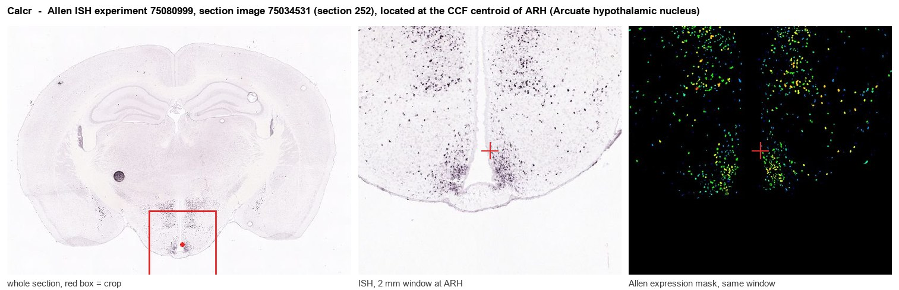
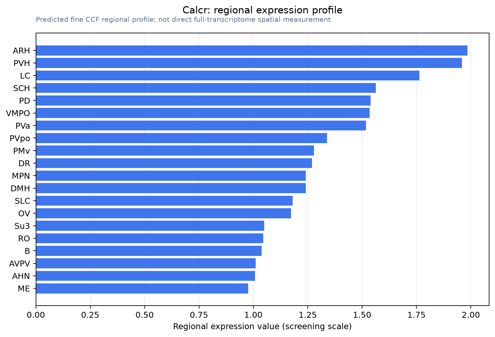

Calcr
Calcitonin receptor (CT-R)
Spatial tier: REGION_BIASED · Class: GPCR · Top region: ARH (Arcuate hypothalamic nucleus) · Positive regions: 33/554
46.5Discovery Score
41.7Targetability Score
CEvidence grade C
What this means: Calcr: fine CCF profile is region-biased toward ARH (top regions: ARH, PVH, LC, SCH, PD); this is a discovery lead, not direct proof.
Function in ARH: evidence, prediction, innovation
- Gene function
- Calcr encodes the calcitonin receptor, a class-B Gs-coupled GPCR. Alone it binds calcitonin and raises cAMP/PKA; paired with RAMP1-3 it becomes the amylin receptor AMY1-3, target of pramlintide and cagrilintide. It also engages ERK and pSTAT3 in neurons.
- Region function
- The arcuate hypothalamic nucleus sits beside the median eminence and reads circulating leptin, insulin and ghrelin through a leaky barrier. Its AgRP/NPY, POMC and Kiss1 neurons set food intake, energy expenditure and neuroendocrine output.
- Published in this region
- direct Direct. Pan et al. 2018 built Calcr-Cre mice and showed Calcr/LepRb neurons lie predominantly in ARH, include NPY/AgRP/GABA cells but not POMC cells, and that ablating LepRb from them causes hyperphagic obesity. Zakariassen et al. 2020 showed fluorescent salmon calcitonin internalises into a subset of ARH NPY neurons. Coester et al. 2020 deleted the receptor from POMC neurons, producing obesity, reduced energy expenditure and loss of the amylin thermogenic response. Assadullah et al. 2018 reported Calcr in hypothalamic kisspeptin neurons.
- Predicted function
- Prediction: ARH Calcr acts as a Gs/cAMP brake on AgRP-NPY drive and amplifier of melanocortin tone, giving amylin-class drugs a hypothalamic site of action parallel to the AP. Chemogenetic activation of ARH Calcr neurons should suppress feeding and raise energy expenditure; ARH-restricted deletion should cause hyperphagia and blunt the anorectic and thermogenic response to cagrilintide.
- Innovation
- ★★☆☆☆ 2/5 ARH Calcr is already mapped, genetically accessed and pharmacologically validated, so the remaining novelty is cell-type resolution rather than discovery.
- Tools
- Calcr-Cre / Calcr-IRES-Cre knock-in lines (Pan 2018, Myers lab); Calcr-floxed allele (Coester 2020); agonists salmon calcitonin, amylin, pramlintide, cagrilintide; antagonist AC187; fluorescent sCT tracers; anti-CTR and anti-RAMP antibodies; Agrp-Cre/Flp and Pomc-Cre for intersectional targeting.
- References
Direct evidence located at the region

Allen ISH experiment 75080999, section image 75034531 (section 252): the section that contains the CCF centroid of Arcuate hypothalamic nucleus according to the Allen image-to-atlas alignment (reference_to_image), with a 2 mm window around that point. Left: whole section, red box = window. Middle: ISH signal. Right: Allen's expression-mask view of the same window. open this image in the Allen viewer
Look it up yourself: Allen Mouse Brain ISH for CalcrAllen reference atlas: ARH (structure 223)ABC Atlas MERFISH viewer(in the ABC Atlas choose dataset MERFISH-C57BL6J-638850-CCF, colour cells by gene "Calcr" or by parcellation_substructure "ARH")All genes confined to ARH + 3-D brain
Direct spatial evidence
MERFISH REGION LOCATOR

Regional expression figure

Predicted WMB × fine-CCF profile; not direct full-transcriptome spatial measurement.
Spatial profile
Evidence and specificity
- Evidence status
- PREDICTED_FINE
- Direct sources
- None; predicted localization only
- Exclusive threshold
- 12 positive regions out of 554
- Spatial specificity
- 0.352
- Top-region fraction
- 0.045
- Filter status
- PASS
Interpretation limits
- Cell-type-to-region projection is imputed expression, not direct spatial measurement.
- Adult reference atlases do not establish stability across age, sex, strain, state, or disease.
- Transcript abundance does not guarantee protein abundance or genetic-tool performance.